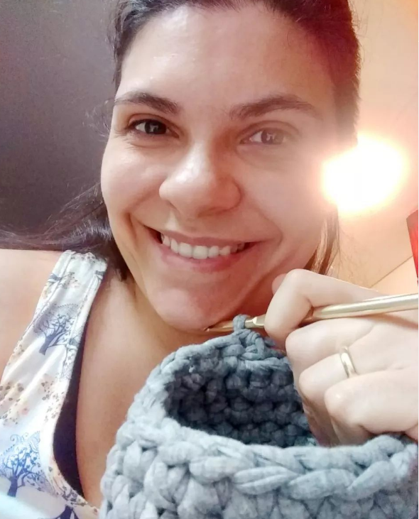
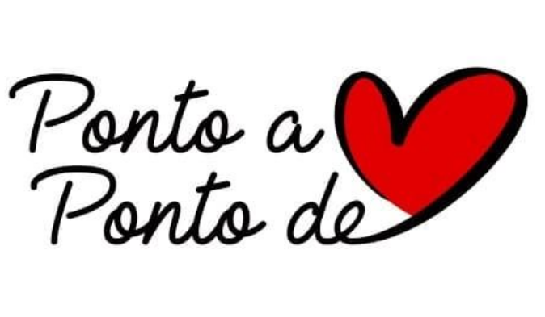

Bem-vindo(a) a Loja Virtual Ponto a Ponto de Coração
Somos uma empresa que acredita no artesanato como uma forma de AMOR.
Amor compartilhado através do tempo e energia investido somados a dedicação e carinho na confecção de cada criação.
Este site é para você que está procurando algo feito com carinho para presentear alguém especial!